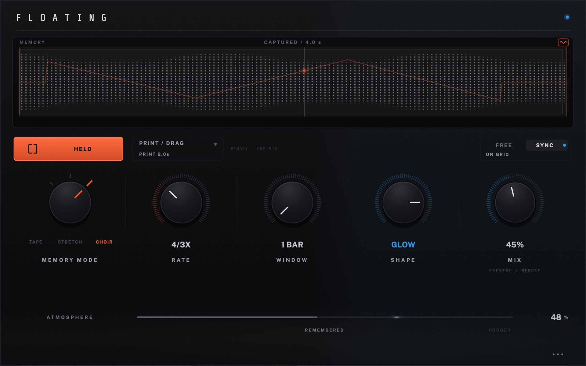

Every download is free, with no account and no key. The builds are unsigned betas; each one has an install guide.
Two instruments, made by ear.
Audio Unit and VST3 plug-ins, built and tuned by one person. Point at an instrument to read about it; open it to go to its own page.
Choose an instrument
FLOATINGMemory instrument
 Beta · v0.9.0 · soon
Open KONSOLL
Beta · v0.9.0 · soon
Open KONSOLL

Beta · v0.4.0 · available Open FLOATING KONSOLLMulti-FX instrument
Beta · v0.9.0 · soon
Open KONSOLL
Point at an instrument to read about itClick to open its page
What it does
FLOATING listens to what you just played and turns it into Memory: it holds the phrase while you decide what to do with it. The original stays untouched.
- Recent audio
- Capture
- Memory
- Atmosphere
Three ways to remember
- Tapereverse, slow, normal and faster movement
- Stretchfrom reverse through freeze to forward
- Choira harmonic companion, from body to glow
Status
- Version
- Beta v0.4.0 Available
- Formats
- Audio Unit · VST3
- Platforms
- macOS (Apple Silicon) · Windows x64
What it does
Four effect modules, HEAT, SWAY, AIR and GRAIN, each playing one of five effects, in any order or wiring. Everything can move with the track.
- Heat
- Sway
- Air
- Grain
Highlights
- Traceloops your knob movements over 1, 2 or 4 bars
- Holdrecords a moment of audio and loops it
- Scenesfour sounds and a morph between two
- 51 presetsloudness matched, tuned by ear
Status
- Version
- Beta v0.9.0 Soon
- Formats
- Audio Unit · VST3
- Platforms
- macOS (Apple Silicon) · Windows later
Support and contact
Both instruments are made by one person. Bug reports, confusion and “this should work differently” are equally welcome; support goes straight into the time this takes.